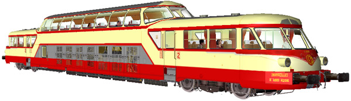
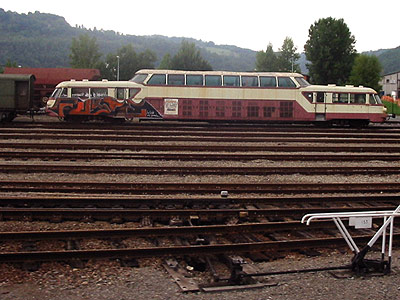
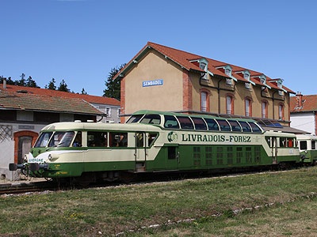

L'X 4200 version 
Pascal Grando a réalisé l'X 4200 pour MSTS.

Ferrovia - 20 Août 2015
X 4200
Autorails Panoramiques
Les X 4200 sont des autorails monocaisse construits à dix exemplaires et mis en service en 1959. Ces engins étaient destinés aux lignes à fort potentiel touristique. La section centrale de la caisse comporte un long compartiment moteur et une soute à bagages surplombés par une salle de première classe surélevée, dont la toiture largement vitrée permet une vision panoramique sur le paysage traversé. Ce compartiment est accessible par un escalier depuis chacune des extrémités où se trouvent un compartiment de seconde classe et un poste de conduite.
Les X 4200 ont déroulé presque toute leur carrière à Marseille. Durant les années 1960, certains engins sont détachés à Grenoble où ils se chargent de "L'Alpazur" entre Genève, Grenoble et Digne et de l'axe Aix-les-Bains, Grenoble, Valence. Puis ils sont engagés sur Marseille-Briançon. Mais l'axe auquel ils resteront fidèles est la ligne des Cévennes. Ils y assurent "Le Cévenol" entre Clermont-Ferrand et Marseille durant 20 ans. A l'aube des années 1980, les premiers engins sont amortis. Les cinq derniers finissent leur carrière à Nîmes. Ils effectuent des relations sur la rampe sud des Cévennes et la ligne de plaine vers Montpellier et Avignon.
La carrière SNCF, assez courte, s'achève en 1985 pour les derniers survivants. Toutefois, plusieurs engins sont conservés par des chemins de fer touristiques. L'X 4206, préservé par la Citev, assure un service entre St Jean du Gard et Anduze, mais fini par rester sans emploi pendant plusieurs années à Capdenac. L'X 4208 reprend du service dès 1986 sur la ligne du Livradois-Forez exploitée par Agrivap. L'engin, toujours en service, a donc roulé plus longtemps pour l'association que pour la SNCF. En 2001, Agrivap a récupéré l'X 4203, initialement conservé pour le musée de Mulhouse, pour pièces. L'X 4206 est récupéré par Agrivap en 2005 et il est acheminé sur la ligne du Livradois. Un projet de restauration et de remise en service est toujours dans les cartons. Enfin, le groupe Renault conserve l'X 4204, classé monument historique, en état statique dans son usine de Flins.
Quelques données techniques
Constructeur : Régie Nationale des Usines Renault
Motorisation : Moteur SACM MGO V12 turbocompressé
Transmission : Diésel-électrique à génératrice
Puissance totale : utilisation limitée à 480 kW
Vitesse maximale en service : 130 km/h
Dispositions des sièges : salle supérieure de 44 places de 1ere classe, dont les dossiers peuvent être orientés dans le sens de la marche. Deux salles de 2e classe de 20 places et 4 strapontins.
Longueur : 26,770 m
Tare : 55,5 t
Pour plus d'info :
La fiche X 4200 sur Wikipedia
L'inventaire des X 4200 sur Trains du Sud-Ouest
La page de présentation des Panoramiques sur le site d'Agrivap.

Exposé aux intempéries et aux taggueurs, l'X 4206 de la Citev
attendait des jours meilleurs (Capdenac, 25/08/2002)

L'X 4208 Livradois-Forez en gare de Sembadel (11/08/2009)